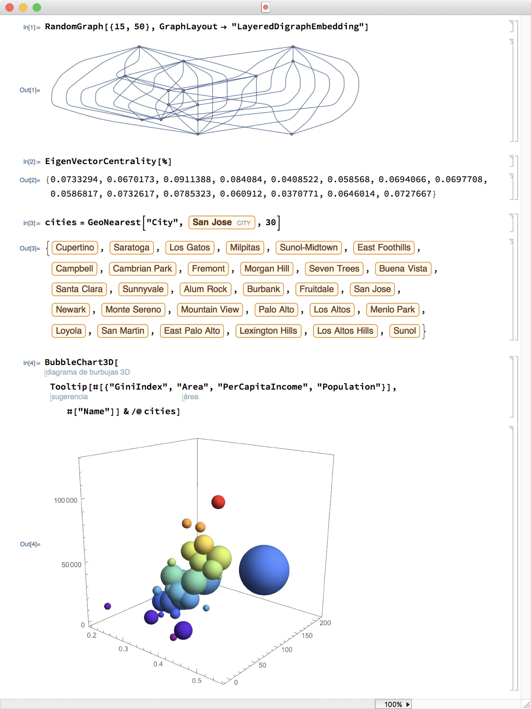

Lisp as Renaissance Workshop
A Lispy Tour through Mathematical Physics
Sam Ritchie, Mentat Collective
Talk's about SICMUtils
Based on scmutils by GJS

"programs must be written for people to read, and only incidentally for machines to execute."
~ Hal Abelson, Structure and Interpretation of Computer Programs
Motivation? Google X etc
Disappointment!
19th Century Scientific Communication
History of Vector Analysis


Code as Communication
So code should have carried on this legacy, right?
Numerical Computing Screenshots
"We personally like Brent's algorithm for univariate minimization, as found on pages 79-80 of his book 'Algorithms for Minimization Without Derivatives'. It is pretty reliable and pretty fast, but we cannot explain how it works."
~ scmutils, refman.txt


template <class F, class T>
std::pair<T, T> brent_find_minima(F f, T min, T max, int bits, std::uintmax_t& max_iter)
noexcept(BOOST_MATH_IS_FLOAT(T) && noexcept(std::declval<F>()(std::declval<T>())))
{
BOOST_MATH_STD_USING
bits = (std::min)(policies::digits<T, policies::policy<> >() / 2, bits);
T tolerance = static_cast<T>(ldexp(1.0, 1-bits));
T x; // minima so far
T w; // second best point
T v; // previous value of w
T u; // most recent evaluation point
T delta; // The distance moved in the last step
T delta2; // The distance moved in the step before last
T fu, fv, fw, fx; // function evaluations at u, v, w, x
T mid; // midpoint of min and max
T fract1, fract2; // minimal relative movement in x
static const T golden = 0.3819660f; // golden ratio, don't need too much precision here!
x = w = v = max;
fw = fv = fx = f(x);
delta2 = delta = 0;
uintmax_t count = max_iter;
do{
// get midpoint
mid = (min + max) / 2;
// work out if we're done already:
fract1 = tolerance * fabs(x) + tolerance / 4;
fract2 = 2 * fract1;
if(fabs(x - mid) <= (fract2 - (max - min) / 2))
break;
if(fabs(delta2) > fract1)
{
// try and construct a parabolic fit:
T r = (x - w) * (fx - fv);
T q = (x - v) * (fx - fw);
T p = (x - v) * q - (x - w) * r;
q = 2 * (q - r);
if(q > 0)
p = -p;
q = fabs(q);
T td = delta2;
delta2 = delta;
// determine whether a parabolic step is acceptable or not:
if((fabs(p) >= fabs(q * td / 2)) || (p <= q * (min - x)) || (p >= q * (max - x)))
{
// nope, try golden section instead
delta2 = (x >= mid) ? min - x : max - x;
delta = golden * delta2;
}
else
{
// whew, parabolic fit:
delta = p / q;
u = x + delta;
if(((u - min) < fract2) || ((max- u) < fract2))
delta = (mid - x) < 0 ? (T)-fabs(fract1) : (T)fabs(fract1);
}
}
else
{
// golden section:
delta2 = (x >= mid) ? min - x : max - x;
delta = golden * delta2;
}
// update current position:
u = (fabs(delta) >= fract1) ? T(x + delta) : (delta > 0 ? T(x + fabs(fract1)) : T(x - fabs(fract1)));
fu = f(u);
if(fu <= fx)
{
// good new point is an improvement!
// update brackets:
if(u >= x)
min = x;
else
max = x;
// update control points:
v = w;
w = x;
x = u;
fv = fw;
fw = fx;
fx = fu;
}
else
{
// Oh dear, point u is worse than what we have already,
// even so it *must* be better than one of our endpoints:
if(u < x)
min = u;
else
max = u;
if((fu <= fw) || (w == x))
{
// however it is at least second best:
v = w;
w = u;
fv = fw;
fw = fu;
}
else if((fu <= fv) || (v == x) || (v == w))
{
// third best:
v = u;
fv = fu;
}
}
}while(--count);
max_iter -= count;
return std::make_pair(x, fx);
}
2001? here’s the python version of Brent https://github.com/scipy/scipy/blob/v1.5.4/scipy/optimize/optimize.py#L2078
And probably delete some of the previous…
;;; Brent's algorithm for univariate minimization -- transcribed from
;;; pages 79-80 of his book "Algorithms for Minimization Without Derivatives"
(define (brent-min f a b eps)
(let ((a (min a b)) (b (max a b))
(maxcount 100)
(small-bugger-factor *sqrt-machine-epsilon*)
(g (/ (- 3 (sqrt 5)) 2))
(d 0) (e 0) (old-e 0) (p 0) (q 0) (u 0) (fu 0))
(let* ((x (+ a (* g (- b a))))
(fx (f x))
(w x) (fw fx) (v x) (fv fx))
(let loop ((count 0))
(if (> count maxcount)
(list 'maxcount x fx count) ;failed to converge
(let* ((tol (+ (* eps (abs x)) small-bugger-factor))
(2tol (* 2 tol))
(m (/ (+ a b) 2)))
;; test for convergence
(if (< (max (- x a) (- b x)) 2tol)
(list x fx count)
(begin
(if (> (abs e) tol)
(let* ((t1 (* (- x w) (- fx fv)))
(t2 (* (- x v) (- fx fw)))
(t3 (- (* (- x v) t2) (* (- x w) t1)))
(t4 (* 2 (- t2 t1))))
(set! p (if (positive? t4) (- t3) t3))
(set! q (abs t4))
(set! old-e e)
(set! e d)))
(if (and (< (abs p) (abs (* 0.5 q old-e)))
(> p (* q (- a x)))
(< p (* q (- b x))))
;; parabolic step
(begin (set! d (/ p q))
(set! u (+ x d))
(if (< (min (- u a) (- b u)) 2tol)
(set! d (if (< x m) tol (- tol)))))
;;else, golden section step
(begin (set! e (if (< x m) (- b x) (- a x)))
(set! d (* g e))))
(set! u (+ x (if (> (abs d) tol)
d
(if (positive? d) tol (- tol)))))
(set! fu (f u))
(if (<= fu fx)
(begin (if (< u x) (set! b x) (set! a x))
(set! v w) (set! fv fw)
(set! w x) (set! fw fx)
(set! x u) (set! fx fu))
(begin (if (< u x) (set! a u) (set! b u))
(if (or (<= fu fw) (= w x))
(begin (set! v w) (set! fv fw)
(set! w u) (set! fw fu))
(if (or (<= fu fv) (= v x) (= v w))
(begin (set! v u) (set! fv fu))))))
(loop (+ count 1))))))))))
Actual Goal

Why Care?
Existing Work
LOGO


Mathematica, Notebooks
Why aren't people doing this?
If all this is software great, what are we doing?
Problems with Code as Comms
- Literate Programming
- Real Science is Multiplayer
- Dynamic is Too Seductive
- LP is one-way
- Real Work doesn't happen here
LP
The problem with Literate Programming is that you really want a culture of literate programming, so that you can build on all of this stuff together. I’m imagining something like the AI memos, or email but where everyone is reading in emacs and you can just fire code around, save it etc. Before all of this version control nonsense.
Real Science is Multiplayer
Science is not just about communication. The progression of science has been inherently multiplayer; so the nice thing about the PDF is you can print it out and sit in your chair and puzzle over what you’re seeing. And then make notes in the margins that potentially lead to the next brick in the wall.
A WEAKNESS with existing stuff is that it’s all geared toward presentations. 3b1b style, for example. Brilliant! But it’s a presentation. It’s not a "viewer" where I can check out my own transformations, play, etc etc
Dynamic == Too Seductive
It is too seductive, people just want the code to work: but the alternative is what, thrashing around with python code?
Something odd happens when the machine is involved. We GLEEFULLY abstain from ironing out and understanding it all, because the machine can perform the thing! Maybe that is like some old-timer in the lab who can work the fridge. But then we lose the knowledge.
Literate == one way
ALSO: as a reader, I can't participate in the cultural thing that created the document!
This is also the problem with notebooks. They are often so dependent on the user's local environment… I read the thing but it was not designed to be shared. Yes, I know about Docker etc…
SO — and this is personal for me — I want to bring more of the teaching and explaining back into real software, into things you can use for real work in a lab.
People are not doing "real work" in these systems
Same with LOGO, with Notebooks. you have to bail out at some point.
Why does it matter?
Future of Education Quote
Explanation as Side Effect
Zettelkasten. Then you go tidy it up for someone else.
The dream environment is one where just playing in public leaves a record of what you did, and is shareable. See Zettelkasten for notes on what to do here. That was the beauty of the Roam promise.
What to make?
SICM and FDG as clues
these books had actually paved the way! And THAT is the culture I want to soak up! The hard narrative work is done, for these particular stories.
Browser based, Clojure, Lisp, build on sicm


Textbook as Nurse Tree
Get a picture of a nurse log…
Physics and the Book: The Road to Reality. The textbook sort of is a starter pack. It’s a library already, it’s a nurse tree. It purports to tell you everything! And in principle it’s all computable and full of abstraction goodies.
And THAT is the culture I want to soak up!
- We have this grand human tale, over thousands of years, of figuring out how the world works. Of how to model reality.
The library that lives in all of these environments, and is fissionable and extensible.
The idea being that the textbook is explicitly about the subject; but actually a model of exposition, of scientific communication.
And the exercises are an invitation to publish your own original thoughts, to participate in the discovery process yourself. But often with no way to practice the publication part. (The discovery has already happened, so why are we only practicing getting the answer? The goal is to share it in a way that ignores someone else.)
And the PIECES the library kicks out are usable elsewhere.
SICMUtils ❤️ Open Source
https://github.com/sicmutils/sicmutils

Many Environments
- Nextjournal
org-mode(these slides!)- Browser (JS) or Server (JVM)
- …
SICMUtils Examples
[(+ (sin 'x) 'x) (+ (sin 12) 2)]
[(+ (sin x) x) 1.4634270819995652]
(tex$$
(up (square (cos (* 't 'phi)))
(floor (* 4 'zeta))))
\[\begin{pmatrix}\displaystyle{{\cos}^{2}\left(\phi\,t\right)} \cr \cr \displaystyle{\left\lfloor 4\,\zeta \right\rfloor}\end{pmatrix}\]
(let [f (literal-function 'f (-> (UP Real Real) Real))]
(tex$$
((D f) (up 'alpha_1 'alpha_2))))
\[\begin{bmatrix}\displaystyle{\partial_0f\left(\begin{pmatrix}\displaystyle{{\alpha}_1} \cr \cr \displaystyle{{\alpha}_2}\end{pmatrix}\right)} \cr \cr \displaystyle{\partial_1f\left(\begin{pmatrix}\displaystyle{{\alpha}_1} \cr \cr \displaystyle{{\alpha}_2}\end{pmatrix}\right)}\end{bmatrix}\]
Lagrange Equation Demo
"What could this expression possibly mean?"
\[{\frac{d}{d t} \frac{\partial L}{\partial \dot{q}}}-\frac{\partial L}{\partial q}=0\]
Expand:
\[{\frac{d}{d t} \frac{\partial L}{\partial \dot{q}}}-\frac{\partial L}{\partial q}=0\]
\[\frac{d}{d t}\left( \left.\frac{\partial L(t, q, \dot{q})}{\partial \dot{q}} \right|_{\substack{ {q=w(t)} \\ {\dot{q}=\frac{d w(t)}{d t}} }} \right)-\left.\frac{\partial L(t, q, \dot{q})}{\partial q}\right|_{ \substack{ q=w(t) \\ {\dot{q}=\frac{d w(t)}{d t}}} }=0\]
Okay, Fine
\[{\frac{d}{d t} \frac{\partial L}{\partial \dot{q}}}-\frac{\partial L}{\partial q}=0\]
Substitutions
\[(D f)(t)=\left.\frac{d}{d x} f(x)\right|_{x=t}\]
\[\Gamma[w](t)=\left(t, w(t), \frac{d}{d t} w(t)\right)\]
\[\frac{d}{dt}\left( \left(\partial_{2} L\right) \left(\Gamma[w](t)\right) \right) - \left(\partial_{1} L\right) \left(\Gamma[w](t)\right)=0\]
\[D\left(\left(\partial_{2} L\right) \circ \left(\Gamma[w]\right)\right) \\ -\left(\partial_{1} L\right) \circ \left(\Gamma[w]\right)=0\]
(defn Lagrange-equations [L]
(fn [w]
(- (D (comp ((partial 2) L) (Gamma w)))
(comp ((partial 1) L) (Gamma w)))))
(defn L-harmonic
"Returns a Lagrangian of a simple harmonic oscillator (mass-spring system).
m is the mass and k is the spring constant used in Hooke's law."
[m k]
(fn [[_ q v]]
(- (* 1/2 m (square v))
(* 1/2 k (square q)))))
(defn proposed-solution [t]
(* 'a (cos (+ (* 'omega t) 'phi))))
(let [L (L-harmonic 'm 'k)
w proposed-solution]
(tex$$
(((Lagrange-equations L) w) 't)))
\[- a\,m\,{\omega}^{2}\,\cos\left(\omega\,t + \phi\right) + a\,k\,\cos\left(\omega\,t + \phi\right)\]
(let [L (L-harmonic 'm 'k)
w (literal-function 'w)]
(tex$$
(((Lagrange-equations L) w) 't)))
\[k\,w\left(t\right) + m\,{D}^{2}w\left(t\right)\]
(let [L (- (comp (literal-function 'T) velocity)
(comp (literal-function 'V) coordinate))
w (literal-function 'w)]
(tex$$
(((Lagrange-equations L) w) 't)))
\[{D}^{2}w\left(t\right)\,{D}^{2}T\left(Dw\left(t\right)\right) + DV\left(w\left(t\right)\right)\]
Clerk Demo
That was not very clear! So let's convince ourselves that that is true, by doing the spring demo in the browser.
Community
- Sussman! Wisdom!
- Colin Smith, founded SICMUtils
- Mentat Collective: Brad Feld and John Underkoffler
- Clerk: Martin Kavalar, Jack Rusher, Nextjournal team
- SCI: Michiel Borkent (@borkdude)
- Mathbox: Chris Chudzicki, Steven Wittens
How to get involved? What's Next?
- Collaborative editing, simulation
- Full library as essays
- Steal the pieces!
- Build things like this!
Conclusion
Lisp, the computational fluid, is something eery and special. It’s not everything; remember, these are just models! But it’s a big deal.
What are we going to do with it?
the whole industry is so frothy, money, excitement, gleefully jettisoning the original values. Which is all great, of course, except it seems like it’s not allowed to go work on inspiring stuff, even though there is far more money.
At the same time, what, we’re gonna change the world by working on developer tools?